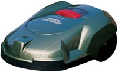
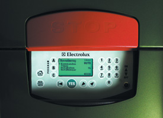
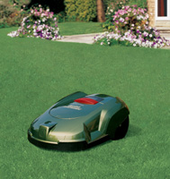
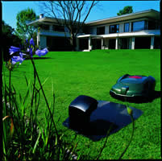
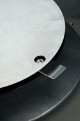

|
 |
Robot tondeuse Automower d'Electrolux
100 € Uniquement sur commande |
L'Automower est avant tout une tondeuse automatique et autonome, avec une forte personnalité. Elle tond votre pelouse toute seule, et vous offre un résultat de coupe impeccable. Elle en est capable grâce à un câble périphérique qu'elle détecte et qui délimite la zone à tondre. Ce câble lui indique où elle se situe dans le jardin et lui permet ainsi d'accéder et de tondre les différentes zones.
Des îlots d'isolement peuvent être créés, grâce au câble périphérique, autour des parterres de fleurs ou des espaces où l'Automower ne doit pas travailler. Si la tondeuse touche un obstacle, comme un arbre, une pierre (ou encore votre jambe), elle fait demi-tour prudemment et prend un autre chemin pour continuer son travail.
L'Automower est accompagnée d'une station de charge qui, installée dans le jardin, lui permet de recharger sa batterie quand elle en a besoin. Ainsi, le robot combine continuellement tonte et charge. L'Automower peut fonctionner tout le temps, 24 h sur 24 ou être programmée selon des plages horaires qui peuvent être différentes entre la semaine et le week-end.
Son fonctionnement est très économique, environ 10 à 20 euros par an d'électricité, en fonction de la superficie à tondre. A condition bien sûr d'entretenir les couteaux et les autres pièces d'usure. Ne vous inquiétez pas si vous la laissez fonctionner la nuit ou quand vous êtes partis car l'Automower est équipée d'un système anti-vol intégré. Un code PIN à 4 chiffres est demandé pour mettre en marche l'Automower (inutilisable sans code) et elle est équipée d'une alarme pour dissuader les utilisateurs non autorisés.
Le concept de l'Automower est directement inspiré de la nature, le principe de l'animal qui broute. Ce qui basiquement signifie que l'herbe est coupée un peu mais souvent. Cela n'est pas seulement plus efficace, c'est aussi meilleur pour votre pelouse.
L'herbe est coupée nette par un disque à 3 couteaux, contrairement aux tondeuses traditionnelles qui ont tendance à l'arracher. La qualité de l'herbe est donc meilleure. Son mode de déplacement permet d'aborder la pelouse sous différents angles. Ce qui crée une surface plus lisse, plus régulière, comme un tapis.
|
 |
 |
|
 |
 |